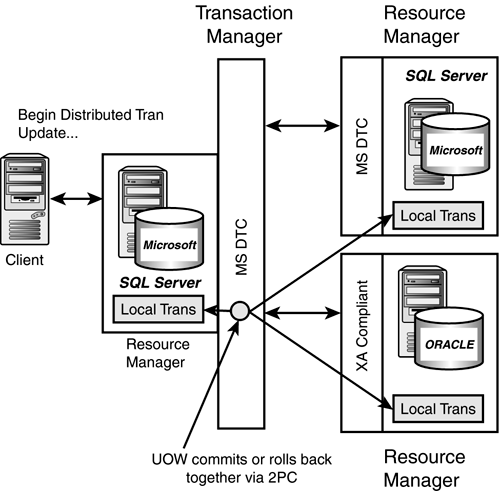
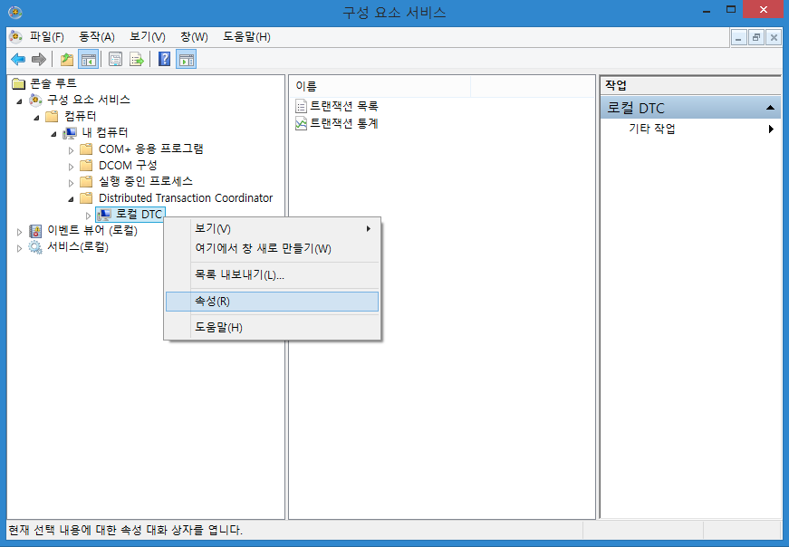
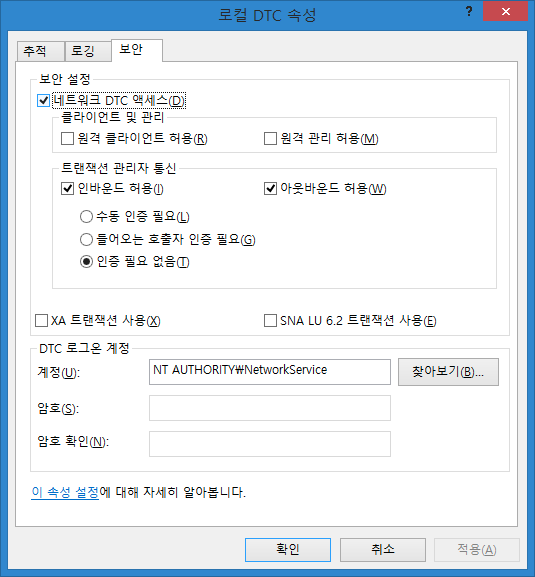
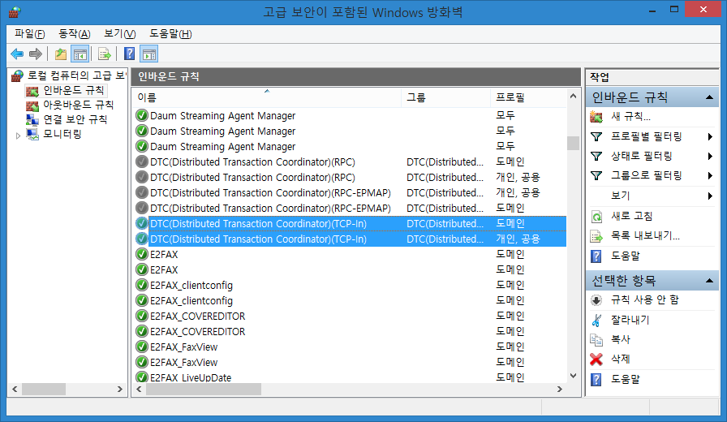
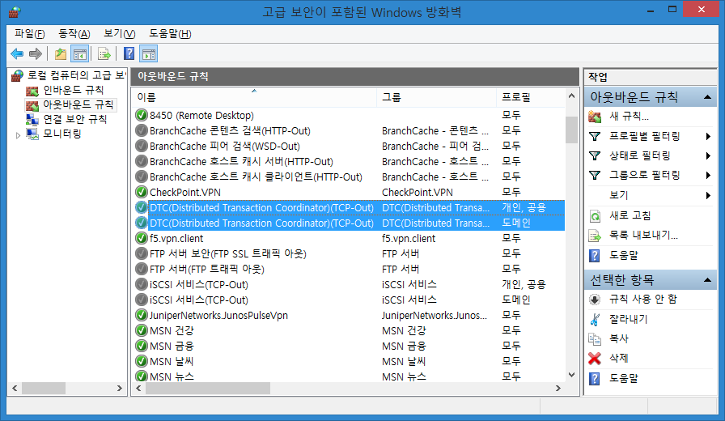
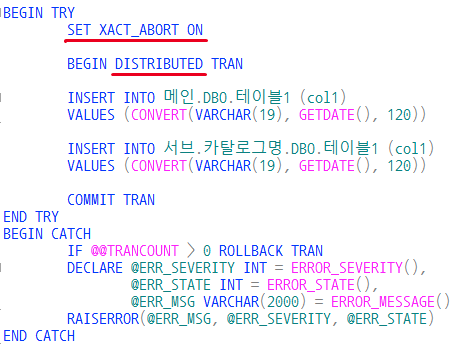
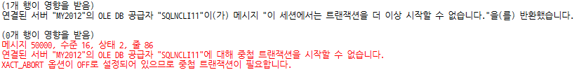

SQL Server 분산 트랜잭션
DTC 개념
우리는 종종 물리적으로 분리되어 있는 이기종 (또는 동종) DBMS 간에 트랜잭션 처리를 하고 싶을 수 있습니다. 이럴때 분산 트랜잭션 처리라는걸 해야 합니다. (Distributed Transaction Coordinator, 이하 DTC)
아래 URL에서 도식화 되어 있는 그림을 보시면 서비스가 어떻게 구성되어야 하는지 이해 하는데에 도움이 되실겁니다.

현재 처한 상황
가산IDC에 회원DB 가 있고, 구로IDC에 마일리지DB 가 있고, 서초IDC에 메인DB 가 있다고 칩시다. 고객님이 인터넷에서 “결제"를 눌렀을때 일어날 수 있는 트랜잭션을 상상해봅시다. 트랜잭션 처리가 제대로 안된다면 발생할 수 있는 불상사는 굉장히 많겠지요ㅠ
DTC를 위한 준비
굉장히 거창해보이고 어려워보이는 MS-DTC 간단하게 설정해보고 테스트 해봅시다. 최초 client의 요청이 시작되는 서버를 메인 이라고 하고, 메인 에 등록된 링크드서버를 서브 라고 하겠습니다. 둘 다 DBMS 는 MS-SQL 이구요.
<필수사항>
- 메인 에서 서브를 “연결된서버” 등록이 되어 있어야 합니다. (너무 당연한 얘기)
- 메인, 서브 모두 “네트워크 DTC 액세스” 가 켜있어야 합니다.
- 두 서버 간 DTC 관련된 방화벽 정책이 오픈되어 있어야 합니다.
- DTC(Distributed Transaction Coordinator)(TCP-In)
- DTC(Distributed Transaction Coordinator)(TCP-Out)
(메인, 서브 모두) “네트워크 DTC 액세스” 열기 : 제어판 > 관리 도구 > 구성 요소 서비스

로컬 DTC > 속성 클릭네트워크 DTC 액세스 체크, 인바운드 허용 체크, 아웃바운드 허용 체크 하고 확인 (메인, 서브 모두) SQL서비스를 재시작합니다.

이제 방화벽을 설정합니다.
DTC(Distributed Transaction Coordinator)(TCP-In) 규칙사용 (프로필 : 개인,공용,도메인)

DTC(Distributed Transaction Coordinator)(TCP-Out) 규칙사용 (프로필 : 개인,공용,도메인)

Distibution transaction test
자, 이제 실제로 쿼리를 날려보겠습니다.

메인 과 서브 에 모두 데이터 반영이 잘되었을겁니다. 위에서 빨간줄 친 부분을 주의깊게 보실 필요가 있는데요.

SET XACT_ABORT OFF 로 하면 무결성에 문제가 생기게 되므로 무조건 에러를 반환하는군요.
참고: https://msdn.microsoft.com/ko-kr/library/ms188792(v=sql.120).aspx↗
BEGIN DISTRIBUTED TRAN 는 분산 트랜잭션을 BEGIN 시켜주는 syntax 입니다.
정리
분산 트랜잭션 테스트를 하면서 개인적으로 아리송 했던 점은 2가지 였습니다.
- 메인, 서브 모두 MS-DTC 가 켜있어야 하는가? ->
켜있어야 하구요. - MS-DTC 를 켠 이후에 SQL 서비스를 재시작하지 않으면 “활성 트랜잭션이 없습니다.” 오류를 반환하기 때문에 SQL 서비스를 재시작 했습니다.
이상 허접한 포스팅을 마치겠습니다.